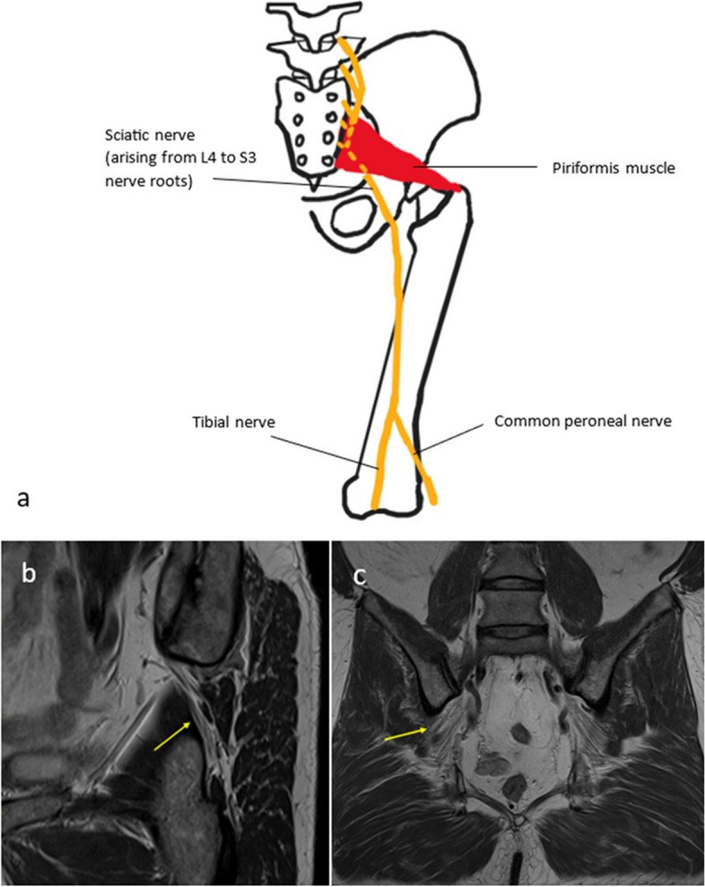
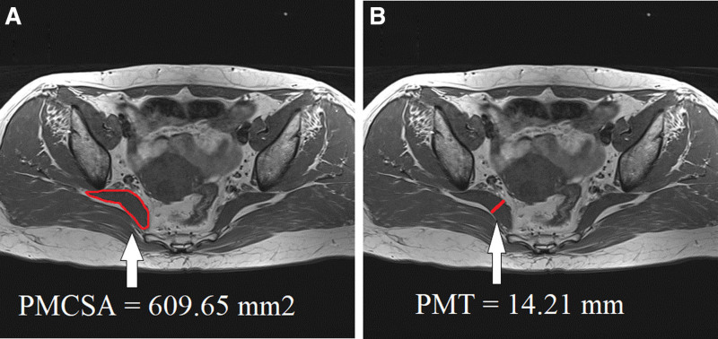
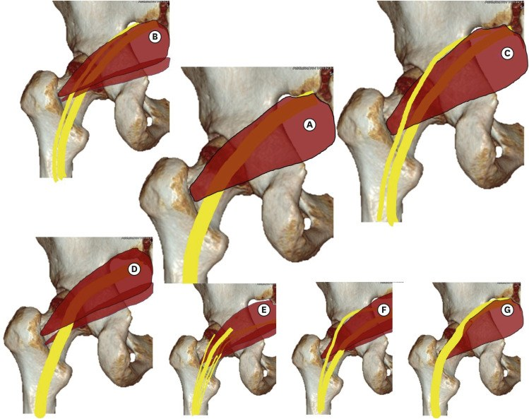
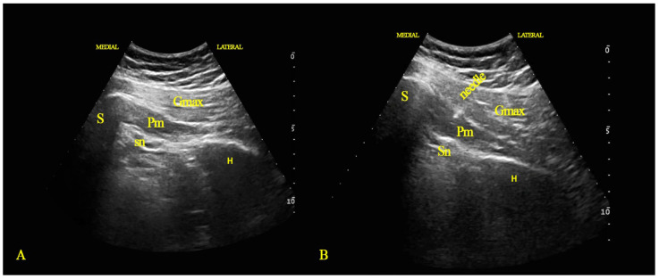

558 — Hội chứng cơ hình lê: chèn ép thần kinh tọa ngoài cột sống / Piriformis syndrome
Tags: pattern:chen-ep-than-kinh vung:mong-sau vung:than-kinh-ngoai-bien protocol:MRI-hong protocol:sieu-am-than-kinh anatomy:mong-sau
Mức chắc chắn (certainty): tổng hợp y văn (literature synthesis) — tổng hợp từ bài tổng quan hình ảnh, nghiên cứu cắt ngang có đối chứng và báo ca; số liệu đọc trực tiếp từ bài gốc, PMCID ghi trong sources.md.
Bài này nối tiếp 556 (đau sàn chậu – thần kinh thẹn) và 228 (thoát vị đĩa đệm – phân độ Pfirrmann). 228 trả lời “đau lan chân có phải do đĩa đệm”; 556 trả lời “đau vùng đáy chậu do dây thần kinh nào”. Bài này trả lời câu hỏi hay bị bỏ qua nhất: đau mông sâu lan chân nhưng MRI cột sống bình thường — có phải cơ hình lê chèn thần kinh tọa, và đo gì trên MRI để chốt?
1. Tổng quan bệnh học – cơ chế hình ảnh
- Giải phẫu: cơ hình lê (piriformis) bám vào mặt trước xương cùng S2–S4, đi qua lỗ ngồi lớn ra sau, bám vào mặt trên – trong mấu chuyển lớn. Thần kinh tọa đi dưới cơ trong đa số người; khi cơ dày, co cứng hoặc có nhánh thần kinh xuyên qua cơ, dây thần kinh bị chèn tại lỗ ngồi lớn.
- Phân loại Beaton–Anson (quan hệ thần kinh tọa – cơ hình lê): type A 80–90% (thần kinh nguyên vẹn đi dưới cơ); type B 10–15% (một bó xuyên cơ, một bó dưới cơ); type C 1–3% (một bó trên, một bó dưới cơ); type D–F < 1% mỗi loại (Son 2022, PMC9634287). Biến thể giải phẫu có ở ~16% dân số theo nghiên cứu xác – y văn, nhưng biến thể đơn thuần không đủ gây bệnh — phải có thêm yếu tố cơ học/viêm.
- Cơ chế hai tầng: (1) chèn ép cơ học — cơ hình lê phì đại, co thắt, xơ hóa sau chấn thương, ngồi lâu, chạy bộ leo dốc; (2) kích thích viêm — dây thần kinh bị cọ xát vào cơ/bờ xương, gây phù và tăng tín hiệu dây. Vì vậy MRI không chỉ đo cơ mà còn phải đọc dây thần kinh (tín hiệu, đường kính, đường đi).
- Vì sao hình ảnh khó: đây là chẩn đoán loại trừ — không có tiêu chuẩn vàng thống nhất (Kumar 2023, PMC10545616). Bệnh nhân thường được chẩn đoán nhầm đau thắt lưng/đau thần kinh tọa do đĩa đệm. Điểm quan trọng: PS và thoát vị đĩa đệm có thể cùng tồn tại — trong 39 bệnh nhân đau thần kinh tọa L4–S1 có điểm đau khu trú cơ hình lê, 84,6% được xác định có PS bằng tiêm lidocaine dưới hướng dẫn siêu âm (giảm ≥ 50% đau) (Topçu 2026, PMC13618775).
- Ngưỡng định lượng trên MRI (số chốt):
- Diện tích mặt cắt cơ hình lê (PMCSA) trên T1W trục: trung bình 564,36 ± 121,61 mm² ở nhóm không bệnh so với 736,88 ± 168,87 mm² ở nhóm PS (p ≤ 0,001). Điểm cắt 611,67 mm² cho Se 75%, Sp 75%, AUC 0,81 (KTC 95%: 0,68–0,94).
- Độ dày cơ hình lê (PMT) trên T1W trục: 13,83 ± 2,61 mm (chứng) so với 15,99 ± 2,34 mm (PS); điểm cắt 14,24 mm cho Se 70%, Sp 70%, AUC 0,78 (KTC 95%: 0,63–0,93) (Lim 2025, PMC11857021).
- Hệ quả: PMCSA nhạy hơn PMT; nhưng cả hai đều Se/Sp chỉ 70–75% — không dùng một mình để chẩn đoán, phải ghép lâm sàng + đáp ứng tiêm.
- TẠI SAO T1W là chuỗi xung đo: mỡ trong cơ và mỡ quanh cơ cho tương phản cao giữa bụng cơ và mô mỡ, nên đo diện tích/độ dày chính xác và so sánh hai bên. T2W/PDFS/STIR để tìm phù cơ, phù dây thần kinh, khối/hoại tử — tín hiệu tăng của dây thần kinh là dấu hiệu gián tiếp của chèn ép, có thể bình thường trong ca mạn tính.
2. Mẫu hình + chẩn đoán phân biệt theo vị trí (gamut)
- Mẫu hình lâm sàng: đau mông sâu một bên, lan mặt sau đùi – cẳng chân; tăng khi ngồi lâu, lái xe, ngồi xổm; đau khi dạng – xoay trong – gấp háng (nghiệm pháp FAIR); điểm đau khi ấn vùng mấu chuyển lớn/khuyết ngồi lớn; không đau cột sống thắt lưng và nghiệm pháp Lasègue cột sống âm.
- Gamut theo khoang mông sâu (deep gluteal space):
- Trong khoang dưới cơ hình lê: hội chứng cơ hình lê, chèn ép thần kinh tọa do dải xơ (fibrovascular band), ischiofemoral impingement (cụp xương đùi – ụ ngồi), khối u dây thần kinh (schwannoma), tụ máu sau chấn thương.
- Ngoài khoang: bệnh gân cơ mông nhỡ/nhỏ, bệnh gân cơ nhị đầu đùi đoạn gần, viêm khớp cùng chậu, lạc nội mạc tử cung trong cơ/dây thần kinh, đau thần kinh thẹn (bài 556).
- Nguồn từ cột sống: thoát vị đĩa đệm L4–S1, hẹp ống sống, hẹp lỗ liên hợp — luôn loại trừ trước (Kumar 2023).
- Mnemonic “PIRIFORMIS”: Phì đại cơ, Ischiofemoral impingement, Radiculopathy (đĩa đệm), Injection/hematoma, Fibrovascular band, Osteophyte/khối u, Red flags (khối, nhiễm, ung thư), Muscle imbalance, Inflammation (lạc nội mạc), Sciatic nerve signal.
3. Bảng so sánh phân biệt (ma trận đối chiếu)
| Thực thể (entity) | Hình ảnh điển hình (MRI 3T/1,5T) | Chốt vào (rule-in) | Chốt loại (rule-out) | Gợi ý xác nhận |
|---|---|---|---|---|
| Hội chứng cơ hình lê | Cơ hình lê dày một bên (PMCSA > 611,67 mm², PMT > 14,24 mm), có thể phù cơ; dây thần kinh tọa tín hiệu tăng, đường đi bất thường | Dày cơ một bên + đau mông sâu tăng khi ngồi + giảm ≥ 50% sau tiêm cơ hình lê | Cơ đối xứng bình thường + đau lan theo da liễu L5/S1 + hình ảnh đĩa đệm chèn rễ → nghĩ nguồn cột sống | MRI hông trục T1W + PDFS; tiêm lidocaine/corticoid dưới siêu âm |
| Ischiofemoral impingement | Hẹp khoảng giữa mấu chuyển nhỏ và ụ ngồi (ngưỡng thường dẫn < 15 mm — chưa đối chiếu nguồn trong bài này), phù cơ thắt lưng chậu và cơ bịt trong | Hẹp khoang + phù cơ thắt lưng chậu, đau khi dạng – duỗi háng | Khoang rộng, cơ bình thường → loại trừ | MRI trục qua ụ ngồi; đo khoảng cách xương |
| Đau thần kinh tọa do đĩa đệm | Thoát vị/đĩa đệm giảm tín hiệu T2 (Pfirrmann), chèn rễ; không dày cơ hình lê | Hình ảnh chèn rễ tương ứng da liễu + nghiệm pháp Lasègue dương | MRI cột sống bình thường + đau mông sâu khu trú → nghĩ PS | MRI cột sống thắt lưng; EMG/đo dẫn truyền |
| Đau thần kinh thẹn | Không có tổn thương cơ hình lê; đau vùng ụ ngồi – âm hộ/dương vật – trực tràng, tăng khi ngồi | Đau theo phân nhánh thần kinh thẹn + block thần kinh thẹn dương | Đau lan mặt sau đùi – cẳng chân → không phải thần kinh thẹn | MRI khung chậu; block dưới hướng dẫn |
| Bệnh gân cơ mông nhỡ/nhỏ | Dày gân, tăng tín hiệu quanh chỗ bám mấu chuyển lớn, teo mỡ cơ mông nhỏ | Đau khu trú mấu chuyển lớn + dày gân trên MRI | Đau sâu trong khung chậu, không đau khi ấn mấu chuyển → nghĩ PS | MRI hông; siêu âm gân |
| Khối u/xơ dây thần kinh tọa | Khối dọc dây thần kinh, ngấm thuốc, có thể tín hiệu mỡ (lipoma) hoặc xơ | Khối khu trú trên MRI + dấu hiệu thần kinh tiến triển | Không có khối, chỉ dày cơ đối xứng → loại trừ | MRI có cản quang; sinh thiết nếu nghi ác |

(a) Quan hệ thường gặp: thần kinh tọa đi dưới cơ hình lê. (b, c) Nam 41 tuổi hội chứng cơ hình lê: chuỗi PD sagittal chếch và coronal hông phải cho thấy thần kinh tọa (mũi tên vàng) có một nhánh xuyên qua cơ hình lê — biến thể giải phẫu là yếu tố thuận lợi. Nguồn: Kumar S et al., Insights Imaging 2023 (PMC10545616, Fig. 1), CC BY 4.0.4. Protocol chụp + tiêu chuẩn hình ảnh
- MRI hông – khung chậu, không cản quang (ưu tiên 3T):
- Trục T1W (hoặc T1W Dixon) qua bụng cơ hình lê: đo PMCSA (diện tích) và PMT (độ dày vuông góc với trục cơ), luôn so sánh hai bên ở cùng một lát cắt giải phẫu.
- Trục + coronal PDFS/STIR: tìm phù cơ, phù dây thần kinh, khối, tụ dịch.
- Sagittal chếch theo trục thần kinh tọa (theo đường đi từ khuyết ngồi lớn xuống): xác định biến thể Beaton–Anson, dải xơ, chỗ hẹp.
- Cản quang chỉ khi nghi khối/u hoặc sau mổ.
- Siêu âm cơ xương khớp: đo độ dày cơ, so sánh hai bên, đánh giá động (dạng – xoay trong háng) và hướng dẫn tiêm; có thể thấy dây thần kinh giảm hồi âm, mất cấu trúc bó khi bị chèn.
- Tiêu chuẩn chẩn đoán phối hợp (không có RADS): (1) đau mông sâu một bên điển hình; (2) loại trừ nguyên nhân cột sống; (3) PMCSA/PMT vượt ngưỡng hoặc bất đối xứng; (4) giảm ≥ 50% đau sau block cơ hình lê — bước (4) là “chốt” thực hành.
- Điều trị – bằng chứng định lượng:
- Tiêm lidocaine/ozone giảm đau ngắn hạn (1 tháng); botulinum toxin A giảm đau và cải thiện ODI tốt hơn ở 6 tháng trong RCT 84 bệnh nhân (Elsawy 2022, PMC9818865).
- Phẫu thuật khi thất bại điều trị bảo tồn: phân tích gộp 6 nghiên cứu nội soi cho VAS giảm −4,7 điểm (KTC 95%: −5,2 đến −4,2) và mHHS tăng +25,6 (KTC 95%: +16,0 đến +35,3); biến chứng 0–12%, đa số nhẹ (Warman 2026, PMC13422639).
- Thuật toán tiếp cận đau mông sâu lan chân:
flowchart TD
A[Dau mong sau mot ben lan chan] --> B{Co dau cot song / Lasègue duong?}
B -->|Co| C[MRI cot song that lung: dia dem, hep lo, hep loi]
B -->|Khong| D[MRI hong: T1W truc do PMCSA - PMT + PDFS + sagittal cheo than kinh toa]
C --> D
D --> E{Co khoi / tu mau / day co bat doi xung?}
E -->|Co khoi| F[MRI can quang - sinh thiet neu nghi ac]
E -->|Khong| G{PMCSA > 611,67 mm2 hoac PMT > 14,24 mm?}
G -->|Co| H[Block co hinh le duoi sieu am]
G -->|Khong| I[Tim nguyen nhan khac: gan mong, ischiofemoral, than kinh then]
H --> J{Giam dau >= 50%?}
J -->|Co| K[Xac nhan PS: vat ly tri lieu, botulinum toxin A]
J -->|Khong| I
K --> L{That bai sau 3-6 thang?}
L -->|Co| M[Mo giai ep: noi soi hoac mo ho]
5. Biến thể bình thường và cạm bẫy
- Cạm bẫy 1 — bất đối xứng do tư thế: xoay đùi khác nhau giữa hai bên làm PMCSA/PMT khác nhau giả tạo. Luôn đo trên cùng lát cắt, cùng mức giải phẫu (ngang mức ụ ngồi/mấu chuyển nhỏ) và ghi rõ mức đo.
- Cạm bẫy 2 — “MRI bình thường” không loại trừ PS: chẩn đoán là loại trừ; tín hiệu dây thần kinh có thể bình thường ở ca mạn. Đừng bỏ chẩn đoán chỉ vì ảnh đẹp.
- Cạm bẫy 3 — chỉ nhìn cột sống: 84,6% bệnh nhân đau thần kinh tọa L4–S1 có kèm PS; thấy thoát vị đĩa đệm không có nghĩa là hết chẩn đoán — nếu đau không tương xứng da liễu, phải khám mông sâu.
- Cạm bẫy 4 — bỏ sót “red flag”: khối trong cơ hình lê có thể là schwannoma, lipoma, sarcoma, lạc nội mạc tử cung, tụ máu. Mọi khối không đối xứng, ngấm thuốc, phát triển theo thời gian cần MRI cản quang và hội chẩn.
- Cạm bẫy 5 — tiêm không đúng mặt phẳng: kim có thể vào dây thần kinh tọa hoặc mạch mông trên; bắt buộc hướng dẫn siêu âm, kiểm tra hút ngược, tránh tiêm ở bệnh nhân rối loạn đông máu.
- Biến thể bình thường: cơ hình lê có thể dày đối xứng ở người tập luyện — chỉ có giá trị khi bất đối xứng + lâm sàng tương ứng.
6. Tự lượng giá — Blind Quiz
Ca 1 — Nam 41 tuổi, đau mông phải lan mặt sau đùi, tăng khi ngồi. MRI hông:
- Câu hỏi: thần kinh tọa đi qua cơ hình lê như thế nào? Đây là biến thể nào? Có phải nguyên nhân duy nhất gây đau không?
Bấm để hiện đáp án (findings + chẩn đoán)
- Dấu hiệu: trên PD sagittal chếch và coronal, một nhánh thần kinh tọa xuyên qua cơ hình lê, nhánh còn lại đi dưới cơ — biến thể Beaton–Anson type B (một bó xuyên cơ, một bó dưới cơ).
- Chẩn đoán: hội chứng cơ hình lê; biến thể chỉ là yếu tố thuận lợi, chẩn đoán cần lâm sàng + đáp ứng tiêm.
- Nguồn ảnh: Kumar S et al., Insights Imaging 2023 (PMC10545616, Fig. 1), CC BY 4.0.
Ca 2 — Nữ 45 tuổi đau mông trái 6 tháng. Muốn “đo cơ hình lê”, bạn đo gì trên lát cắt nào?

- Câu hỏi: hai phép đo trong ảnh là gì? Ngưỡng nào gợi ý bệnh? Vì sao phải so sánh hai bên?
Bấm để hiện đáp án (findings + chẩn đoán)
- (A) PMCSA — diện tích mặt cắt cơ hình lê; (B) PMT — độ dày cơ đo vuông góc trục cơ, trên T1W trục hông.
- Ngưỡng: PMCSA > 611,67 mm² (Se 75%, Sp 75%, AUC 0,81); PMT > 14,24 mm (Se 70%, Sp 70%, AUC 0,78).
- Vì sao so sánh hai bên: giảm ảnh hưởng của kích thước cơ thể và tư thế; bất đối xứng mới có ý nghĩa.
- Nguồn ảnh: Lim C et al., Medicine 2025 (PMC11857021, Fig. 1), CC BY-NC 4.0.
Ca 3 — Bệnh nhân trẻ đau mông dữ dội, đã mổ cột sống nhưng không đỡ. Nhìn sơ đồ phân loại:

- Câu hỏi: kiểu nào phổ biến nhất? Kiểu nào dễ gây chèn ép nhất? Vì sao “đã mổ cột sống mà vẫn đau” là gợi ý?
Bấm để hiện đáp án (findings + chẩn đoán)
- Type A 80–90% (thần kinh nguyên vẹn dưới cơ); type B 10–15% (một bó xuyên cơ); type C 1–3% (một bó trên – một bó dưới cơ); type D–F < 1%.
- Nhánh xuyên cơ dễ bị chèn khi cơ phì đại/co thắt → đau dai dẳng dù đĩa đệm đã xử lý.
- Bài học: đau không tương xứng da liễu sau mổ cột sống phải khám lại mông sâu và đọc MRI hông.
- Nguồn ảnh: Son BC & Lee C, Korean J Neurotrauma 2022 (PMC9634287, Fig. 1), CC BY-NC 4.0.
Ca 4 — Sau khi xác định cơ hình lê dày, bước tiếp theo là gì?

- Câu hỏi: mốc giải phẫu trong ảnh? Vì sao tiêm dưới hướng dẫn siêu âm? Chọn thuốc nào nếu muốn giảm đau kéo dài?
Bấm để hiện đáp án (findings + chẩn đoán)
- Mốc: S xương cùng, H xương hông, Gmax cơ mông lớn, Pm cơ hình lê, Sn thần kinh tọa; kim vào bụng cơ hình lê dưới hướng dẫn siêu âm.
- Vì sao siêu âm: tránh tiêm vào thần kinh tọa/mạch, xác nhận vị trí kim, giảm biến chứng.
- Chọn thuốc: lidocaine/ozone giảm đau ngắn hạn; botulinum toxin A cải thiện VAS/ODI tốt hơn ở 6 tháng (RCT 84 bệnh nhân).
- Nguồn ảnh: Elsawy AGS et al., Healthcare 2022 (PMC9818865, Fig. 1), CC BY 4.0.
Bài liên quan chéo
- 556 – Đau sàn chậu & đau thần kinh thẹn
- 228 – Thoát vị đĩa đệm thắt lưng & phân độ Pfirrmann
- 377 – U thần kinh dạng đám rối & MPNST/NF1
Không dùng để chẩn đoán độc lập khi chưa có người hướng dẫn.